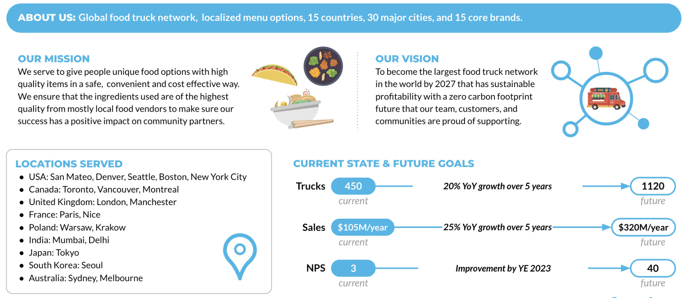

Todo lo que viene despues (fundamentos, pipelines, IA, gobierno y el agente de Snowflake CoWork) se apoya en este ambiente. Siete pasos guiados, ~7 minutos, y la cuenta queda lista.
Requisitos Previos
Cuenta Snowflake
Entregada por el instructor, con Cortex Code (CoCo) y Snowflake CoWork habilitados, y acceso a ACCOUNTADMIN.
Carpeta archivos/
Los 7 archivos multimodales del workshop descargados en tu equipo.
Navegador
Chrome, Edge o Firefox actualizado.

Tasty Bytes: la empresa ficticia de food trucks de este workshop
Como trabajar este lab
Abre Projects > Workspaces, crea un SQL File nuevo (+ Add new > SQL File) y nombralo lab0_setup. En cada paso: lee la explicacion, pulsa Copiar, pega al final del SQL File, selecciona solo lo que pegaste y ejecuta con Ctrl/Cmd + Enter. Ejecuta los bloques en orden: cada uno depende del anterior.
Datos de ejemplo
Tasty Bytes es una empresa ficticia de Snowflake; los datos son sinteticos y publicos (s3://sfquickstarts/frostbyte_tastybytes/).
1
Crear tu SQL File y crear la base TB_101
~1 min
SQL
En este paso: Creamos la base TB_101, los roles y los warehouses de la demo con sus permisos para que cada rol vea solo lo suyo.
Criterio de exito: Tienes el SQL File lab0_setup abierto y la base TB_101 con sus 7 esquemas.
Inicia sesion en la cuenta Snowflake que te entrego el instructor.
Ubicate en Projects > Workspaces.
Haz clic en + Add new > SQL File y nombralo lab0_setup.
Verifica en el selector de contexto que el rol activo sea ACCOUNTADMIN (el script cambia de rol cuando lo necesita).
Crear un SQL File en Workspaces (quickstart Zero to Snowflake)
Empezamos con el rol SYSADMIN, el rol pensado para crear objetos (bases, warehouses). El query tag etiqueta cada query de esta sesion para poder rastrearla luego en el historial.
SQLRol y query tag
-- raw_pos table buildUSEROLE sysadmin;
-- assign Query Tag to SessionALTER SESSION SET query_tag = '{"origin":"sf_sit-is","name":"tb_zts","version":{"major":1, "minor":1},"attributes":{"is_quickstart":1, "source":"sql", "vignette": "setup"}}';
Una base de datos agrupa esquemas, y cada esquema agrupa tablas y vistas. Organizamos Tasty Bytes por capas: raw_* (datos crudos tal como llegan), harmonized (datos unidos y limpios), analytics (listos para consumo), mas governance y semantic_layer para los labs de gobierno y semantica.
SQLBase y esquemas
-- Crea la base de datos TB_101CREATEORREPLACEDATABASE tb_101;
-- create raw_pos schemaCREATEORREPLACESCHEMA tb_101.raw_pos;
-- create raw_customer schemaCREATEORREPLACESCHEMA tb_101.raw_customer;
-- create harmonized schemaCREATEORREPLACESCHEMA tb_101.harmonized;
-- create analytics schemaCREATEORREPLACESCHEMA tb_101.analytics;
-- create governance schemaCREATEORREPLACESCHEMA tb_101.governance;
-- create raw_supportCREATEORREPLACESCHEMA tb_101.raw_support;
-- Create schema for the Semantic LayerCREATEORREPLACESCHEMA tb_101.semantic_layer
COMMENT = 'Schema for the business-friendly semantic layer, optimized for analytical consumption.';
Que deberias ver
Database TB_101 successfully created. y un mensaje Schema ... successfully created. por cada uno de los 7 esquemas.
2
Warehouses, roles y privilegios
~1 min
SQL
En este paso: Creamos los warehouses, los roles y los privilegios que separan las funciones de administrador, ingeniero, desarrollador y analista.
Criterio de exito: Existen los 4 warehouses TB_*_WH y los 4 roles TB_* con sus grants.
Un virtual warehouse es computo independiente del almacenamiento. Creamos uno por tipo de carga: tb_de_wh para ingenieria de datos (en XLARGE solo para la carga inicial; al final lo bajamos a XSMALL), tb_dev_wh para desarrollo, tb_analyst_wh multi-cluster para analistas y tb_cortex_wh para cargas de IA. Todos nacen suspendidos y se apagan solos tras 60 s sin uso: solo pagas por segundo de uso.
SQLWarehouses
-- create warehousesCREATEORREPLACEWAREHOUSE tb_de_wh
WAREHOUSE_SIZE = 'xlarge'-- XLarge para la carga inicial; se reduce a XSmall al final
WAREHOUSE_TYPE = 'standard'
AUTO_SUSPEND = 60
AUTO_RESUME = TRUE
INITIALLY_SUSPENDED = TRUECOMMENT = 'data engineering warehouse for tasty bytes';
-- Crea el warehouse de la demoCREATEORREPLACEWAREHOUSE tb_dev_wh
WAREHOUSE_SIZE = 'xsmall'
WAREHOUSE_TYPE = 'standard'
AUTO_SUSPEND = 60
AUTO_RESUME = TRUE
INITIALLY_SUSPENDED = TRUECOMMENT = 'developer warehouse for tasty bytes';
-- create analyst warehouseCREATEORREPLACEWAREHOUSE tb_analyst_wh
COMMENT = 'TastyBytes Analyst Warehouse'
WAREHOUSE_TYPE = 'standard'
WAREHOUSE_SIZE = 'large'
MIN_CLUSTER_COUNT = 1
MAX_CLUSTER_COUNT = 2
SCALING_POLICY = 'standard'
AUTO_SUSPEND = 60
INITIALLY_SUSPENDED = true,
AUTO_RESUME = true;
-- Create a dedicated large warehouse for analytical workloadsCREATEORREPLACEWAREHOUSE tb_cortex_wh
WAREHOUSE_SIZE = 'LARGE'
WAREHOUSE_TYPE = 'STANDARD'
AUTO_SUSPEND = 60
AUTO_RESUME = TRUE
INITIALLY_SUSPENDED = TRUECOMMENT = 'Dedicated large warehouse for Cortex Analyst and other analytical tools.';
Snowflake usa control de acceso basado en roles (RBAC): los privilegios se dan a roles y los roles a usuarios. Con SECURITYADMIN creamos 4 roles funcionales y los encadenamos en una jerarquia: tb_analyst y tb_dev heredan hacia tb_data_engineer, este hacia tb_admin y este hacia sysadmin.
SQLRoles y jerarquia
-- create rolesUSEROLE securityadmin;
-- functional rolesCREATEROLEIFNOTEXISTS tb_admin
COMMENT = 'admin for tasty bytes';
-- Crea el rolCREATEROLEIFNOTEXISTS tb_data_engineer
COMMENT = 'data engineer for tasty bytes';
-- Crea el rolCREATEROLEIFNOTEXISTS tb_dev
COMMENT = 'developer for tasty bytes';
-- Crea el rolCREATEROLEIFNOTEXISTS tb_analyst
COMMENT = 'analyst for tasty bytes';
-- role hierarchyGRANTROLE tb_admin TOROLE sysadmin;
GRANTROLE tb_data_engineer TOROLE tb_admin;
GRANTROLE tb_dev TOROLE tb_data_engineer;
GRANTROLE tb_analyst TOROLE tb_data_engineer;
Ahora los privilegios. Con ACCOUNTADMIN damos acceso a la base compartida SNOWFLAKE (historial de uso) y el permiso de crear warehouses. Luego, con SECURITYADMIN, damos USAGE sobre la base y esquemas y ALL sobre cada esquema a los roles del equipo.
SQLPrivilegios sobre base y esquemas
-- privilege grantsUSEROLE accountadmin;
-- Da acceso a las vistas de metadatos de SnowflakeGRANT IMPORTED PRIVILEGES ONDATABASE snowflake TOROLE tb_data_engineer;
-- Permite crear warehouses al rol adminGRANTCREATEWAREHOUSEON ACCOUNT TOROLE tb_admin;
-- create rolesUSEROLE securityadmin;
-- Da uso de la base a los rolesGRANT USAGE ONDATABASE tb_101 TOROLE tb_admin;
GRANT USAGE ONDATABASE tb_101 TOROLE tb_data_engineer;
GRANT USAGE ONDATABASE tb_101 TOROLE tb_dev;
-- Da uso de todos los esquemas a los rolesGRANT USAGE ONALL SCHEMAS INDATABASE tb_101 TOROLE tb_admin;
GRANT USAGE ONALL SCHEMAS INDATABASE tb_101 TOROLE tb_data_engineer;
GRANT USAGE ONALL SCHEMAS INDATABASE tb_101 TOROLE tb_dev;
-- Da todos los permisos sobre los esquemasGRANTALLONSCHEMA tb_101.raw_support TOROLE tb_admin;
GRANTALLONSCHEMA tb_101.raw_support TOROLE tb_data_engineer;
GRANTALLONSCHEMA tb_101.raw_support TOROLE tb_dev;
-- Da todos los permisos sobre los esquemasGRANTALLONSCHEMA tb_101.raw_pos TOROLE tb_admin;
GRANTALLONSCHEMA tb_101.raw_pos TOROLE tb_data_engineer;
GRANTALLONSCHEMA tb_101.raw_pos TOROLE tb_dev;
-- Da todos los permisos sobre los esquemasGRANTALLONSCHEMA tb_101.harmonized TOROLE tb_admin;
GRANTALLONSCHEMA tb_101.harmonized TOROLE tb_data_engineer;
GRANTALLONSCHEMA tb_101.harmonized TOROLE tb_dev;
-- Da todos los permisos sobre los esquemasGRANTALLONSCHEMA tb_101.analytics TOROLE tb_admin;
GRANTALLONSCHEMA tb_101.analytics TOROLE tb_data_engineer;
GRANTALLONSCHEMA tb_101.analytics TOROLE tb_dev;
-- Da todos los permisos sobre los esquemasGRANTALLONSCHEMA tb_101.governance TOROLE tb_admin;
GRANTALLONSCHEMA tb_101.governance TOROLE tb_data_engineer;
GRANTALLONSCHEMA tb_101.governance TOROLE tb_dev;
-- Da todos los permisos sobre los esquemasGRANTALLONSCHEMA tb_101.semantic_layer TOROLE tb_admin;
GRANTALLONSCHEMA tb_101.semantic_layer TOROLE tb_data_engineer;
GRANTALLONSCHEMA tb_101.semantic_layer TOROLE tb_dev;
Grants sobre warehouses (incluida la propiedad de tb_de_wh para tb_admin) y future grants: privilegios que se aplican automaticamente a las tablas y vistas que se creen despues en esos esquemas, sin tener que volver a otorgarlos.
SQLWarehouses y future grants
-- warehouse grantsGRANT OWNERSHIP ONWAREHOUSE tb_de_wh TOROLE tb_admin COPY CURRENT GRANTS;
-- Da permisos sobre los warehouses a los rolesGRANTALLONWAREHOUSE tb_de_wh TOROLE tb_admin;
GRANTALLONWAREHOUSE tb_de_wh TOROLE tb_data_engineer;
-- Da permisos sobre los warehouses a los rolesGRANTALLONWAREHOUSE tb_dev_wh TOROLE tb_admin;
GRANTALLONWAREHOUSE tb_dev_wh TOROLE tb_data_engineer;
GRANTALLONWAREHOUSE tb_dev_wh TOROLE tb_dev;
-- Da permisos sobre los warehouses a los rolesGRANTALLONWAREHOUSE tb_analyst_wh TOROLE tb_admin;
GRANTALLONWAREHOUSE tb_analyst_wh TOROLE tb_data_engineer;
GRANTALLONWAREHOUSE tb_analyst_wh TOROLE tb_dev;
-- Da permisos sobre los warehouses a los rolesGRANTALLONWAREHOUSE tb_cortex_wh TOROLE tb_admin;
GRANTALLONWAREHOUSE tb_cortex_wh TOROLE tb_data_engineer;
GRANTALLONWAREHOUSE tb_cortex_wh TOROLE tb_dev;
-- future grantsGRANTALLON FUTURE TABLESINSCHEMA tb_101.raw_pos TOROLE tb_admin;
GRANTALLON FUTURE TABLESINSCHEMA tb_101.raw_pos TOROLE tb_data_engineer;
GRANTALLON FUTURE TABLESINSCHEMA tb_101.raw_pos TOROLE tb_dev;
-- Da permisos sobre objetos futuros de los esquemasGRANTALLON FUTURE TABLESINSCHEMA tb_101.raw_customer TOROLE tb_admin;
GRANTALLON FUTURE TABLESINSCHEMA tb_101.raw_customer TOROLE tb_data_engineer;
GRANTALLON FUTURE TABLESINSCHEMA tb_101.raw_customer TOROLE tb_dev;
-- Da permisos sobre objetos futuros de los esquemasGRANTALLON FUTURE VIEWS INSCHEMA tb_101.harmonized TOROLE tb_admin;
GRANTALLON FUTURE VIEWS INSCHEMA tb_101.harmonized TOROLE tb_data_engineer;
GRANTALLON FUTURE VIEWS INSCHEMA tb_101.harmonized TOROLE tb_dev;
-- Da permisos sobre objetos futuros de los esquemasGRANTALLON FUTURE VIEWS INSCHEMA tb_101.analytics TOROLE tb_admin;
GRANTALLON FUTURE VIEWS INSCHEMA tb_101.analytics TOROLE tb_data_engineer;
GRANTALLON FUTURE VIEWS INSCHEMA tb_101.analytics TOROLE tb_dev;
-- Da permisos sobre objetos futuros de los esquemasGRANTALLON FUTURE VIEWS INSCHEMA tb_101.governance TOROLE tb_admin;
GRANTALLON FUTURE VIEWS INSCHEMA tb_101.governance TOROLE tb_data_engineer;
GRANTALLON FUTURE VIEWS INSCHEMA tb_101.governance TOROLE tb_dev;
-- Da permisos sobre objetos futuros de los esquemasGRANTALLON FUTURE VIEWS INSCHEMA tb_101.semantic_layer TOROLE tb_admin;
GRANTALLON FUTURE VIEWS INSCHEMA tb_101.semantic_layer TOROLE tb_data_engineer;
GRANTALLON FUTURE VIEWS INSCHEMA tb_101.semantic_layer TOROLE tb_dev;
Privilegios especiales para labs posteriores: aplicar masking policies (lab de gobierno), ejecutar data metric functions (calidad de datos), acceso del analista a su warehouse y el rol de base de datos SNOWFLAKE.CORTEX_USER para usar las funciones de IA.
SQLMasking, DMF, analista y Cortex
-- privilege grantsUSEROLE accountadmin;
-- Permite aplicar politicas de enmascaramientoGRANT APPLY MASKING POLICYON ACCOUNT TOROLE tb_admin;
GRANT APPLY MASKING POLICYON ACCOUNT TOROLE tb_data_engineer;
-- Grants for tb_adminGRANTEXECUTE DATA METRIC FUNCTIONON ACCOUNT TOROLE tb_admin;
-- Grants for tb_analystGRANTALLONSCHEMA harmonized TOROLE tb_analyst;
GRANTALLONSCHEMA analytics TOROLE tb_analyst;
-- Permite al analista usar su warehouseGRANT OPERATE, USAGE ONWAREHOUSE tb_analyst_wh TOROLE tb_analyst;
-- Grants for cortex search serviceGRANTDATABASEROLE SNOWFLAKE.CORTEX_USER TOROLE TB_DEV;
-- Da uso del esquema al rolGRANT USAGE ONSCHEMA TB_101.HARMONIZED TOROLE TB_DEV;
GRANT USAGE ONWAREHOUSE TB_DE_WH TOROLE TB_DEV;
Que deberias ver
Cada sentencia devuelve Statement executed successfully. (o ... successfully created. para warehouses y roles).
3
File format, stages S3 y tablas raw
~1 min
SQL
En este paso: Definimos el formato de archivo, los stages hacia S3 y las tablas raw donde aterrizan los datos de Tasty Bytes.
Criterio de exito: Existen el file format csv_ff, 3 stages y 9 tablas raw vacias.
Volvemos a SYSADMIN y activamos tb_de_wh. Un file format describe como leer los archivos (aqui CSV). Un stage externo es un puntero a una ubicacion en la nube (un bucket S3 publico con los datos de Tasty Bytes) desde donde Snowflake carga datos. Tambien creamos un stage interno con directory table para los modelos semanticos YAML.
SQLFile format y stages
-- raw_pos table buildUSEROLE sysadmin;
-- Setup truck detailsUSEWAREHOUSE tb_de_wh;
-- Crea el formato de archivo CSVCREATEORREPLACEFILEFORMAT tb_101.public.csv_ff
type = 'csv';
-- Crea el stage externo apuntando a S3CREATEORREPLACESTAGE tb_101.public.s3load
COMMENT = 'Quickstarts S3 Stage Connection'
url = 's3://sfquickstarts/frostbyte_tastybytes/'
file_format = tb_101.public.csv_ff;
-- Crea el stage externo apuntando a S3CREATEORREPLACESTAGE tb_101.public.truck_reviews_s3load
COMMENT = 'Truck Reviews Stage'
url = 's3://sfquickstarts/tastybytes-voc/'
file_format = tb_101.public.csv_ff;
-- This stage will be used to upload your YAML files.CREATEORREPLACESTAGE tb_101.semantic_layer.semantic_model_stage
DIRECTORY = (ENABLE = TRUE)
COMMENT = 'Internal stage for uploading Cortex Analyst semantic model YAML files.';
Creamos las tablas de la capa raw con su esquema explicito: paises, franquicias, ubicaciones, menu (con una columna VARIANT para JSON semiestructurado), camiones, cabecera y detalle de ordenes, clientes del programa de lealtad y resenas de los food trucks. Son tablas vacias: las llenamos en el paso 5.
File format CSV_FF successfully created., Stage area ... successfully created. (x3) y Table ... successfully created. por cada una de las 9 tablas.
4
Vistas harmonized, analytics y semantic layer
~1 min
SQL
En este paso: Armamos las vistas por capas (harmonized, analytics, semantic layer) que luego consumen los analistas y la IA.
Criterio de exito: Existen las vistas en harmonized, analytics y semantic_layer.
Una vista es una consulta guardada: no copia datos, se calcula al consultarla. En harmonized unimos las tablas raw: orders_v junta ordenes, camiones, menu, franquicias, ubicaciones y clientes; customer_loyalty_metrics_v resume ventas por cliente; truck_reviews_v enriquece las resenas.
SQLVistas harmonized
-- Crea la vistaCREATEORREPLACEVIEW tb_101.harmonized.orders_v
ASSELECT
oh.order_id,
oh.truck_id,
oh.order_ts,
od.order_detail_id,
od.line_number,
m.truck_brand_name,
m.menu_type,
t.primary_city,
t.region,
t.country,
t.franchise_flag,
t.franchise_id,
f.first_name AS franchisee_first_name,
f.last_name AS franchisee_last_name,
l.location_id,
cl.customer_id,
cl.first_name,
cl.last_name,
cl.e_mail,
cl.phone_number,
cl.children_count,
cl.gender,
cl.marital_status,
od.menu_item_id,
m.menu_item_name,
od.quantity,
od.unit_price,
od.price,
oh.order_amount,
oh.order_tax_amount,
oh.order_discount_amount,
oh.order_total
FROM tb_101.raw_pos.order_detail od
JOIN tb_101.raw_pos.order_header oh
ON od.order_id = oh.order_id
JOIN tb_101.raw_pos.truck t
ON oh.truck_id = t.truck_id
JOIN tb_101.raw_pos.menu m
ON od.menu_item_id = m.menu_item_id
JOIN tb_101.raw_pos.franchise f
ON t.franchise_id = f.franchise_id
JOIN tb_101.raw_pos.location l
ON oh.location_id = l.location_id
LEFTJOIN tb_101.raw_customer.customer_loyalty cl
ON oh.customer_id = cl.customer_id;
-- loyalty_metrics_v viewCREATEORREPLACEVIEW tb_101.harmonized.customer_loyalty_metrics_v
ASSELECT
cl.customer_id,
cl.city,
cl.country,
cl.first_name,
cl.last_name,
cl.phone_number,
cl.e_mail,
SUM(oh.order_total) AS total_sales,
ARRAY_AGG(DISTINCT oh.location_id) AS visited_location_ids_array
FROM tb_101.raw_customer.customer_loyalty cl
JOIN tb_101.raw_pos.order_header oh
ON cl.customer_id = oh.customer_id
GROUPBY cl.customer_id, cl.city, cl.country, cl.first_name,
cl.last_name, cl.phone_number, cl.e_mail;
-- truck_reviews_v viewCREATEORREPLACEVIEW tb_101.harmonized.truck_reviews_v
ASSELECTDISTINCT
r.review_id,
r.order_id,
oh.truck_id,
r.language,
source,
r.review,
t.primary_city,
oh.customer_id,
TO_DATE(oh.order_ts) ASdate,
m.truck_brand_name
FROM raw_support.truck_reviews r
JOIN raw_pos.order_header oh
ON oh.order_id = r.order_id
JOIN raw_pos.truck t
ON t.truck_id = oh.truck_id
JOIN raw_pos.menu m
ON m.menu_type_id = t.menu_type_id;
La capa analytics expone esas vistas para consumo (agregando la columna date), da acceso a tb_admin sobre las resenas y crea una vista de ventas de Japon en febrero 2022 que usa la app de Streamlit.
SQLVistas analytics
-- Crea la vistaCREATEORREPLACEVIEW tb_101.analytics.orders_v
COMMENT = 'Tasty Bytes Order Detail View'ASSELECTDATE(o.order_ts) ASdate, * FROM tb_101.harmonized.orders_v o;
-- customer_loyalty_metrics_v viewCREATEORREPLACEVIEW tb_101.analytics.customer_loyalty_metrics_v
COMMENT = 'Tasty Bytes Customer Loyalty Member Metrics View'ASSELECT * FROM tb_101.harmonized.customer_loyalty_metrics_v;
-- truck_reviews_v viewCREATEORREPLACEVIEW tb_101.analytics.truck_reviews_v
ASSELECT * FROM harmonized.truck_reviews_v;
-- Da uso del esquema al rolGRANT USAGE ONSCHEMA raw_support toROLE tb_admin;
-- Da lectura del objeto al rolGRANTSELECTONTABLE raw_support.truck_reviews TOROLE tb_admin;
-- view for streamlit appCREATEORREPLACEVIEW tb_101.analytics.japan_menu_item_sales_feb_2022
ASSELECTDISTINCT menu_item_name,
date,
order_total
FROM analytics.orders_v
WHERE country = 'Japan'ANDYEAR(date) = '2022'ANDMONTH(date) = '2'GROUPBYALLORDERBYdate;
La capa semantica ofrece vistas "amigables para el negocio": IDs como texto, solo clientes y ciudades conocidos. Sobre ellas trabajaran Cortex Analyst y el agente en los labs 7 y 8.
SQLVistas semantic_layer
-- Orders view for the Semantic LayerCREATEORREPLACEVIEW tb_101.semantic_layer.orders_v
COMMENT = 'Provides a clean, business-friendly view of order data, filtered to include only orders from known customers and locations.'ASSELECT
order_id::VARCHAR AS order_id,
truck_id::VARCHAR AS truck_id,
order_detail_id::VARCHAR AS order_detail_id,
truck_brand_name,
menu_type,
primary_city,
region,
country,
franchise_flag,
franchise_id::VARCHAR AS franchise_id,
location_id::VARCHAR AS location_id,
customer_id::VARCHAR AS customer_id,
gender,
marital_status,
menu_item_id::VARCHAR AS menu_item_id,
menu_item_name,
quantity,
order_total,
DATE(order_ts) AS order_date
FROM
tb_101.harmonized.orders_v
WHERE
customer_id ISNOTNULLAND primary_city ISNOTNULL;
-- Customer Loyalty Metrics view for the Semantic LayerCREATEORREPLACEVIEW tb_101.semantic_layer.customer_loyalty_metrics_v
ASSELECT
cl.customer_id::VARCHAR AS customer_id,
cl.city,
cl.country,
SUM(o.order_total) AS total_sales,
ARRAY_AGG(DISTINCT o.location_id::VARCHAR) WITHIN GROUP (ORDERBY o.location_id::VARCHAR) AS visited_location_ids_array
FROM tb_101.harmonized.customer_loyalty_metrics_v AS cl
JOIN tb_101.harmonized.orders_v AS o
ON cl.customer_id = o.customer_id
GROUPBY
cl.customer_id,
cl.city,
cl.country;
Que deberias ver
View ... successfully created. por cada vista. Aun no devuelven filas porque las tablas estan vacias.
5
Cargar datos desde S3 y configurar IA
~1 min
SQL
En este paso: Cargamos las resenas desde S3 y dejamos listos los permisos de IA y el stage donde viviran los archivos multimodales.
Criterio de exito: Los COPY INTO terminan con LOADED, existe el servicio tasty_bytes_review_search y tus roles TB_* estan asignados.
COPY INTO es el comando de carga masiva: lee en paralelo los archivos del stage y los inserta en la tabla. Por eso tb_de_wh esta en XLARGE: order_detail tiene ~670 millones de filas. Este es el bloque mas lento del setup; mientras corre, el instructor presenta la arquitectura del workshop. No cierres la pestana.
SQLCOPY INTO
-- Carga los datos desde el stage a la tablaCOPYINTO tb_101.raw_support.truck_reviews
FROM @tb_101.public.truck_reviews_s3load/raw_support/truck_reviews/;
-- country table loadCOPYINTO tb_101.raw_pos.country
FROM @tb_101.public.s3load/raw_pos/country/;
-- franchise table loadCOPYINTO tb_101.raw_pos.franchise
FROM @tb_101.public.s3load/raw_pos/franchise/;
-- location table loadCOPYINTO tb_101.raw_pos.location
FROM @tb_101.public.s3load/raw_pos/location/;
-- menu table loadCOPYINTO tb_101.raw_pos.menu
FROM @tb_101.public.s3load/raw_pos/menu/;
-- truck table loadCOPYINTO tb_101.raw_pos.truck
FROM @tb_101.public.s3load/raw_pos/truck/;
-- customer_loyalty table loadCOPYINTO tb_101.raw_customer.customer_loyalty
FROM @tb_101.public.s3load/raw_customer/customer_loyalty/;
-- order_header table loadCOPYINTO tb_101.raw_pos.order_header
FROM @tb_101.public.s3load/raw_pos/order_header/;
-- Setup truck detailsUSEWAREHOUSE tb_de_wh;
-- order_detail table loadCOPYINTO tb_101.raw_pos.order_detail
FROM @tb_101.public.s3load/raw_pos/order_detail/;
Que deberias ver
Una fila por archivo cargado con status = LOADED y rows_loaded en cada COPY. Sin errores.
Preparamos datos para el lab de pipeline: agregamos a truck una columna OBJECT con anio, marca y modelo, ensuciamos a proposito la marca (Ford_ vs Ford) en la mitad de los camiones, y creamos truck_details.
SQLtruck_build y truck_details
-- add truck_build columnALTERTABLE tb_101.raw_pos.truck
ADD COLUMN truck_build OBJECT;
-- construct an object from year, make, model and store on truck_build columnUPDATE tb_101.raw_pos.truck
SET truck_build = OBJECT_CONSTRUCT(
'year', year,
'make', make,
'model', model
);
-- Messing up make data in truck_build objectUPDATE tb_101.raw_pos.truck
SET truck_build = OBJECT_INSERT(
truck_build,
'make',
'Ford',
TRUE
)
WHERE
truck_build:make::STRING = 'Ford_'AND
truck_id % 2 = 0;
-- truck_details table buildCREATEORREPLACETABLE tb_101.raw_pos.truck_details
ASSELECT * EXCLUDE (year, make, model)
FROM tb_101.raw_pos.truck;
Creamos un servicio de Cortex Search sobre el texto de las resenas: indexa la columna REVIEW para busqueda semantica y se refresca cada hora (TARGET_LAG). Lo usara el agente.
SQLCortex Search
-- Create or replace the Cortex Search Service named 'tasty_bytes_review_search'. --CREATEORREPLACECORTEXSEARCHSERVICE tb_101.harmonized.tasty_bytes_review_search
ON REVIEW
ATTRIBUTES LANGUAGE, ORDER_ID, REVIEW_ID, TRUCK_BRAND_NAME, PRIMARY_CITY, DATE, SOURCE
WAREHOUSE = tb_de_wh
TARGET_LAG = '1 hour'AS (
SELECT
REVIEW,
LANGUAGE,
ORDER_ID,
REVIEW_ID,
TRUCK_BRAND_NAME,
PRIMARY_CITY,
DATE,
SOURCE
FROM
tb_101.harmonized.truck_reviews_v
WHERE
REVIEW ISNOTNULL
);
Grants sobre la capa semantica y su stage, habilitamos cross-region para que Cortex pueda usar modelos de otra region si no estan en la tuya, y creamos la base snowflake_intelligence.agents donde viviran los agentes.
SQLSemantic layer y Snowflake Intelligence
-- create rolesUSEROLE securityadmin;
-- Additional Grants on semantic layerGRANTSELECTONVIEW tb_101.semantic_layer.orders_v TOROLE PUBLIC;
GRANTSELECTONVIEW tb_101.semantic_layer.customer_loyalty_metrics_v TOROLE PUBLIC;
-- Da permisos sobre el stage al rolGRANT READ ONSTAGE tb_101.semantic_layer.semantic_model_stage TOROLE tb_admin;
-- Da permisos sobre el stage al rolGRANT WRITE ONSTAGE tb_101.semantic_layer.semantic_model_stage TOROLE tb_admin;
-- privilege grantsUSEROLE ACCOUNTADMIN;
-- ability to run across cloud if claude is not in your region:ALTER ACCOUNT SET CORTEX_ENABLED_CROSS_REGION = 'ANY_REGION';
-- Create a databaseCREATEDATABASEIFNOTEXISTS snowflake_intelligence;
-- Crea el esquema para los agentesCREATESCHEMAIFNOTEXISTS snowflake_intelligence.agents;
-- create a schema to store the agentsGRANT USAGE ONDATABASE snowflake_intelligence TOROLE TB_DEV;
GRANT USAGE ONSCHEMA snowflake_intelligence.agents TOROLE TB_DEV;
-- Grant the CREATE AGENT privilege on the agents schemaGRANTCREATEAGENTONSCHEMA snowflake_intelligence.agents TOROLE TB_DEV;
Ajustes del HOL sobre el setup oficial: grants que le faltaban a tb_analyst y tb_data_engineer, y asignacion de los roles tb_admin, tb_analyst y tb_dev a tu usuario (con CURRENT_USER()). Luego creamos el stage interno archivos (cifrado del lado del servidor y con directory table) para los archivos multimodales, y bajamos tb_de_wh a XSMALL.
SQLAjustes HOL, roles y stage archivos
-- create rolesUSEROLE securityadmin;
-- Da uso de la base a los rolesGRANT USAGE ONDATABASE tb_101 TOROLE tb_analyst;
GRANT USAGE ONALL SCHEMAS INDATABASE tb_101 TOROLE tb_analyst;
-- Da lectura de todas las tablas o vistas al analistaGRANTSELECTONALLTABLESINSCHEMA tb_101.raw_pos TOROLE tb_analyst;
GRANTSELECTONALLTABLESINSCHEMA tb_101.raw_customer TOROLE tb_analyst;
GRANTSELECTONALL VIEWS INDATABASE tb_101 TOROLE tb_analyst;
-- Da acceso a las funciones Cortex AIGRANTDATABASEROLE SNOWFLAKE.CORTEX_USER TOROLE tb_analyst;
-- Da uso del esquema al rolGRANT USAGE ONSCHEMA tb_101.public TOROLE tb_data_engineer;
GRANT USAGE ONFILEFORMAT tb_101.public.csv_ff TOROLE tb_data_engineer;
-- Guarda tu usuario actual en una variableSET my_user = CURRENT_USER();
-- Asigna los roles a tu usuarioGRANTROLE tb_admin TO USER IDENTIFIER($my_user);
GRANTROLE tb_analyst TO USER IDENTIFIER($my_user);
GRANTROLE tb_dev TO USER IDENTIFIER($my_user);
-- privilege grantsUSEROLE accountadmin;
-- Crea el stage interno para archivos multimodalesCREATEORREPLACESTAGE tb_101.public.archivos
DIRECTORY = (ENABLE = TRUE)
ENCRYPTION = (TYPE = 'SNOWFLAKE_SSE')
COMMENT = 'Archivos multimodales del HOL (audio, docx, imagenes)';
-- Da permisos sobre el stage al rolGRANT READ, WRITE ONSTAGE tb_101.public.archivos TOROLE tb_admin;
-- Da permisos sobre el stage al rolGRANT READ ONSTAGE tb_101.public.archivos TOROLE tb_analyst;
-- Devuelve el warehouse a XSmallALTERWAREHOUSE tb_de_wh SET WAREHOUSE_SIZE = 'xsmall';
Bug real: 3 errores del setup oficial que aqui ya vienen corregidos
tb_data_engineer no tenia USAGE sobre public.csv_ff, por lo que fallaba el stage del menu (lab 2). tb_analyst no tenia SELECT sobre raw_customer ni el rol CORTEX_USER. El grant correcto es GRANT DATABASE ROLE SNOWFLAKE.CORTEX_USER (no GRANT SNOWFLAKE.CORTEX_USER).
Que deberias ver
Cortex search service TASTY_BYTES_REVIEW_SEARCH successfully created., Stage area ARCHIVOS successfully created. y el resto Statement executed successfully.
6
Subir los archivos multimodales al stage ARCHIVOS
~1 min
UI
En este paso: Subimos por la interfaz los archivos de ejemplo al stage ARCHIVOS para usarlos mas adelante con funciones de IA.
Criterio de exito: El stage @tb_101.public.archivos muestra los 7 archivos.
Estos audios, documentos e imagenes se usan en el lab 4 (IA multimodal).
Ubicate en Catalog > Database Explorer > TB_101 > PUBLIC > Stages > ARCHIVOS.
Haz clic en + Files y arrastra los 7 archivos de la carpeta archivos/ que te entrego el instructor:
CONTRATO_ARRENDAMIENTO_01.docx
CONTRATO_ARRENDAMIENTO_02.docx
TELCO.png
cedula.jpg
choque.png
ofreciendo-producto.mp3
problema-servicio.mp3
Confirma con Upload.
Que deberias ver
La pestana Files del stage ARCHIVOS lista los 7 archivos.
7
Capa de negocio y verificacion de la carga
~1 min
SQL
En este paso: Construimos la capa de negocio y verificamos que la carga quedo completa con conteos de filas.
Criterio de exito: Existen ventas_diarias, ventas_items_mes y ventas_hora_ciudad, y los conteos coinciden con las cifras verificadas.
Resumimos ~670M lineas de detalle en tablas compactas de negocio que usan el lab 7, el agente y las apps. Subimos temporalmente tb_de_wh a XLARGE para que el calculo sea rapido. CREATE TABLE ... AS SELECT (CTAS) crea y llena la tabla en un solo paso. La primera tiene grano dia x camion.
SQLWarehouse XLARGE y ventas_diarias
-- privilege grantsUSEROLE accountadmin;
-- Escala el warehouse a XLargeALTERWAREHOUSE tb_de_wh SET WAREHOUSE_SIZE = 'xlarge';
-- Setup truck detailsUSEWAREHOUSE tb_de_wh;
-- Grano: dia x camion (ordenes y ticket promedio exactos)CREATEORREPLACETABLE tb_101.analytics.ventas_diarias
COMMENT = 'Ventas diarias por food truck (USD)'ASSELECTDATE(oh.order_ts) AS fecha,
t.truck_id,
m.truck_brand_name AS marca,
m.menu_type AS tipo_menu,
t.primary_city AS ciudad,
t.country AS pais,
t.franchise_flag = 1AS es_franquicia,
SUM(od.price) AS ventas,
SUM(od.quantity) AS unidades,
COUNT(DISTINCT oh.order_id) AS ordenes
FROM tb_101.raw_pos.order_detail od
JOIN tb_101.raw_pos.order_header oh ON oh.order_id = od.order_id
JOIN tb_101.raw_pos.truck t ON t.truck_id = oh.truck_id
JOIN tb_101.raw_pos.menu m ON m.menu_item_id = od.menu_item_id
GROUPBYALL;
ventas_items_mes tiene grano mes x camion x item del menu (preguntas por producto). ventas_hora_ciudad es el pulso horario 2022 por ciudad y marca (pestana "Ciudad viva" de las apps). Al final volvemos tb_de_wh a XSMALL y damos SELECT al analista.
SQLventas_items_mes, ventas_hora_ciudad y grants
-- Grano: mes x camion x item del menu (preguntas por producto)CREATEORREPLACETABLE tb_101.analytics.ventas_items_mes
COMMENT = 'Ventas mensuales por item del menu y food truck (USD)'ASSELECTDATE_TRUNC('month', oh.order_ts)::DATEAS mes,
t.truck_id,
m.truck_brand_name AS marca,
m.menu_type AS tipo_menu,
m.menu_item_name AS item_menu,
m.item_category AS categoria_item,
t.primary_city AS ciudad,
t.country AS pais,
SUM(od.price) AS ventas,
SUM(od.quantity) AS unidades
FROM tb_101.raw_pos.order_detail od
JOIN tb_101.raw_pos.order_header oh ON oh.order_id = od.order_id
JOIN tb_101.raw_pos.truck t ON t.truck_id = oh.truck_id
JOIN tb_101.raw_pos.menu m ON m.menu_item_id = od.menu_item_id
GROUPBYALL;
-- Grano: ciudad x hora x marca, 2022 (pestana "Ciudad viva" de las apps)CREATEORREPLACETABLE tb_101.analytics.ventas_hora_ciudad
COMMENT = 'Pulso horario 2022 por ciudad y marca (USD)'ASSELECT
t.primary_city AS ciudad,
HOUR(oh.order_ts) AS hora,
m.truck_brand_name AS marca,
COUNT(DISTINCT oh.order_id) AS ordenes,
SUM(od.price) AS ventas,
COUNT(DISTINCT oh.location_id) AS ubicaciones,
COUNT(DISTINCT t.truck_id) AS camiones
FROM tb_101.raw_pos.order_detail od
JOIN tb_101.raw_pos.order_header oh ON oh.order_id = od.order_id
JOIN tb_101.raw_pos.truck t ON t.truck_id = oh.truck_id
JOIN tb_101.raw_pos.menu m ON m.menu_item_id = od.menu_item_id
WHEREYEAR(oh.order_ts) = 2022GROUPBYALL;
-- Devuelve el warehouse a XSmallALTERWAREHOUSE tb_de_wh SET WAREHOUSE_SIZE = 'xsmall';
-- Da lectura de todas las tablas o vistas al analistaGRANTSELECTONALLTABLESINSCHEMA tb_101.analytics TOROLE tb_analyst;
Resultado verificado
La capa de negocio sobre ~670M lineas tarda ~17 s en XLARGE (Gen2). El setup completo tomo 5 min 27 s en la ejecucion de validacion.
Por ultimo, contamos filas de las tablas principales para confirmar que la carga desde S3 fue completa.
SQLVerificacion
-- Verificacion de la cargaSELECT'order_header'AS tabla, COUNT(*) AS filas FROM tb_101.raw_pos.order_header
UNIONALLSELECT'order_detail', COUNT(*) FROM tb_101.raw_pos.order_detail
UNIONALLSELECT'customer_loyalty', COUNT(*) FROM tb_101.raw_customer.customer_loyalty
UNIONALLSELECT'truck_reviews', COUNT(*) FROM tb_101.raw_support.truck_reviews
UNIONALLSELECT'truck', COUNT(*) FROM tb_101.raw_pos.truck;